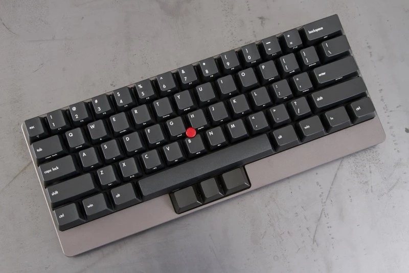

メカニカルキーボードにトラックポイントがついているキーボード(Tex Yoda)です。

以前よりトラックポイントが付いているキーボードを愛用していて、こんなの


を使ってきました。ちなみに上の２つはもう売っていません。
メカニカルキーボードも使ってみたいと思いつつ、トラックポイントがないので踏みきれていませんでした。 ＃そういえば大学の先輩がHHKに穴を開けてトラックポイントを取り付ける改造を試みていましたが、あれはどうなったんだろう・・
そんなところにTex Yodaが Massdrop https://www.massdrop.com/buy/tex-yoda で購入できるということを知って乗っかってみました。 なお、Massdropは、サイトで欲しい人を募り、目標人数を達成(drop)すれば割引価格で購入できるというショッピングサイトです。
メカニカルキーボードははじめてなので、軸について調査。
なんとなくこれみて茶色かなということで茶軸を選択。
2015/02/01にdropが完了して、発送されたのが4/8。待ち長いですが、まとまった数での購入なのでこのあたりはしかたないですね。
Tex Yodaは基本的に自分で組み立てる（ハンダ付け）必要があります。 注文時に組み立て済みのものを選択できますが+$50くらいかかります。
組み立ては全工程で2hほどかかりました。
- 組み立て方: https://www.massdrop.com/ext/yoda/assembly
- 詳しいレポート: http://unasuke.com/review/2015/tex-yoda-trackpoint-keyboard-assembly
操作感は良好。トラックポイントの感度がこれまで使っていたものより入力が大きいので調整が必要でした。
自分で組み立てるのは楽しいし愛着わきますね。